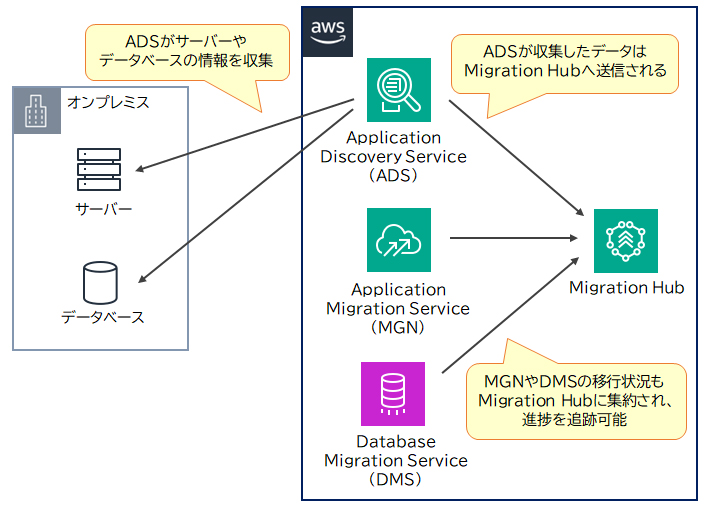

🚚 AWSへの移行ツール SAA
AWSへの移行は、現状把握 → 移行作業 → 進捗確認という複数のステップで進められます。 AWSは各ステップを支援する専用ツールを提供しています。
主な移行サービス
🔎 Application Discovery Service（ADS）
オンプレのサーバーやDBの情報（構成・使用状況・依存関係）を収集し、移行後の設計の参考情報にする。
🗃 Database Migration Service（DMS）
DB移行を簡素化。異種DBエンジン間（例：MySQL→PostgreSQL）も移行可能。CDCで継続的レプリケーションし、最小限のダウンタイムで移行。
🖥 Application Migration Service（MGN）
サーバー全体をリフトアンドシフトで迅速移行。カットオーバー時のダウンタイムを最小化。別アカウント・リージョン間移行も対応。
📊 Migration Hub
移行プロジェクト全体の進捗を一元管理。ADS・DMS・MGNと連携し、1つのダッシュボードに集約。
🔧 Migration Hub Refactor Spaces
モノリスからマイクロサービスへの段階的リファクタリングを支援。HTTPトラフィックを既存と新サービスへ振り分ける。
💹 Migration Evaluator
オンプレの利用状況を分析しベースラインを整理。移行のビジネスケース作成やコスト見積もりを支援。
移行戦略（7R）
| 戦略 | 内容 |
|---|---|
| Retire（廃止） | 使われていないアプリ・サーバーを廃止・アーカイブする。 |
| Retain（保持） | 移行せず現状維持する（まだ移行しない）。 |
| Rehost（リホスト） | 「リフトアンドシフト」。変更を加えずEC2などへ移行。 |
| Relocate（再配置） | 構成を維持したまま実行場所のみを移動（例：VMware on AWS）。 |
| Repurchase（再購入） | 別バージョンや製品（SaaSなど）に置き換える。 |
| Replatform（リプラットフォーム） | 大きな改変なしに一部を最適化（例：マネージドDBへ）。 |
| Refactor / Re-architect | クラウドネイティブな構造へ作り変える。 |

🔶 試験のポイント（SAA 頻出）
- DB移行＝DMS（異種DB変換は SCT 併用）、サーバー移行＝MGN
- 現状把握＝ADS、進捗管理＝Migration Hub
- 移行戦略「7R」：Retire / Retain / Rehost / Relocate / Repurchase / Replatform / Refactor